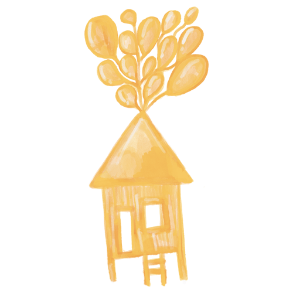
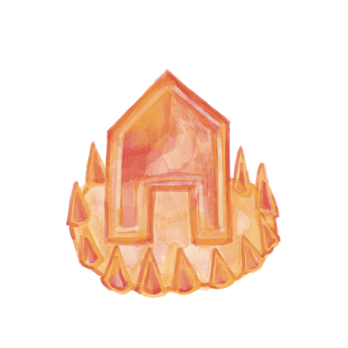
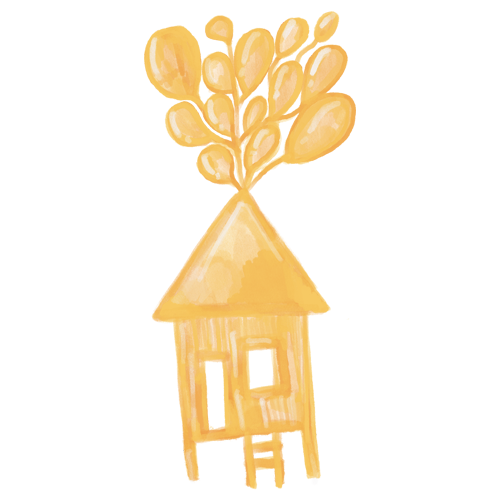
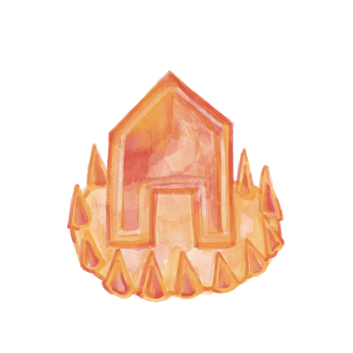

STATEMENT:
The topic of immigration is very close to my heart. I am a proud immigrant from the Philippines-- the place I call home. From my personal experiences to the current issues that immigrants are facing in the United States, I centered my time and effort to create concepts highlighting what it means to be an immigrant.
As an artist, I tackled various questions to start my conceptualization process. Questions such as: 'Is home a feeling or an actual place?', 'Does the experience of immigration change one's identity?' and 'What does it mean to be an immigrant in 2020?' are some of the questions I asked myself. As I reminisce about my emotional experiences of moving, I thought about my loved ones who I miss dearly. Personally, the term 'home' has a strong connection with my family and friends back in the Philippines. The memories we've created together in and out of our humble abode are some of the happiest memories I can recall. Those memories strengthen my core, and it reminds me of the dreams I've created while I was growing up.
My first project called 'Ang Lumilipad Kong Kubo (My flying house)', depicts a Bahay Kubo (Nipa Hut), a traditional stilt house in the Philippines, tied onto a group of balloons. Through this project, I wanted to evoke a sense of nostalgia and tie in the concept of immigration with a playful twist. As I conceptualized the project, certain questions lingered my head--'What if we don'st have to leave our homes to immigrate to another country?', 'What if we bring the place we grew up in but in a different city?', 'Is home the architecture or the feeling?'. These questions sparked an idea to create a Bahay Kubo that represents Filipino culture and tie it with the modern Disney movie.
My second project called 'The Land of The Free', combines the concept of home and a concerning national issue. During the 2020 presidential election debate between Trump and Biden, the issue involving 545 families was mentioned. 545 parents of migrant children have not been found or located. This inspired me to focus my concept on the idea of the 'American Dream'. The current immigration policies and government has shattered the dreams and lives of the families involved. I pondered on questions such as 'Is America really the land of the free?' and 'Is this the American Dream?' during my creative process.
My final project called 'Barangay Liwanag (Village of Lights)', illustrates the story of Christmas and culture. I created a narrative depicting the traditional 'Parol' (Lantern) that Filipinos hang during the Christmas season and its importance to its people. The project uses a net art style of storytelling to give choices for the viewer. The parol represents hope and love. As I live in the United States, I've seen multiple houses around the Bay Area that have a parol dangling in front of their house. It reminds me that home is a feeling and that I'm surrounded by family.
My personal experiences strengthen the core of each project I've created for the class. I want to share my thoughts and emotions, hoping that it will help people understand the struggles of being an immigrant. I hope that the new government creates new policies and laws that would help immigrants reach their 'American Dream'.


 


